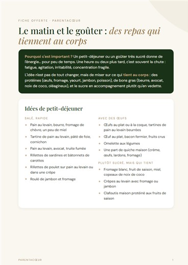
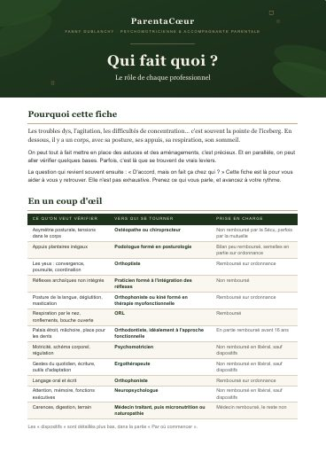

Le matin et le goûter
Des idées de petits-déjeuners et de goûters sains et nutritifs.
Recevoir la fiche
Qui fait quoi ? Le rôle de chaque professionnel
ORL, ostéopathe, orthophoniste, psychomotricien… pour savoir vers qui vous tourner, et dans quel ordre.
Recevoir la fiche